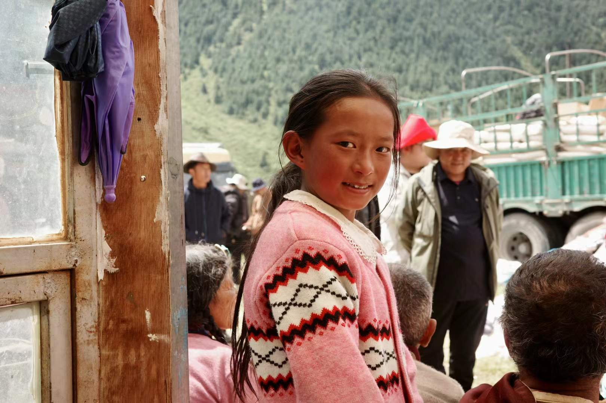
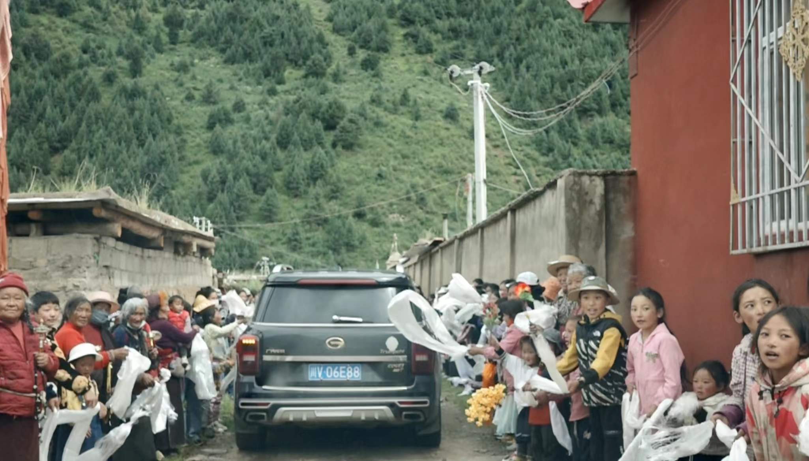
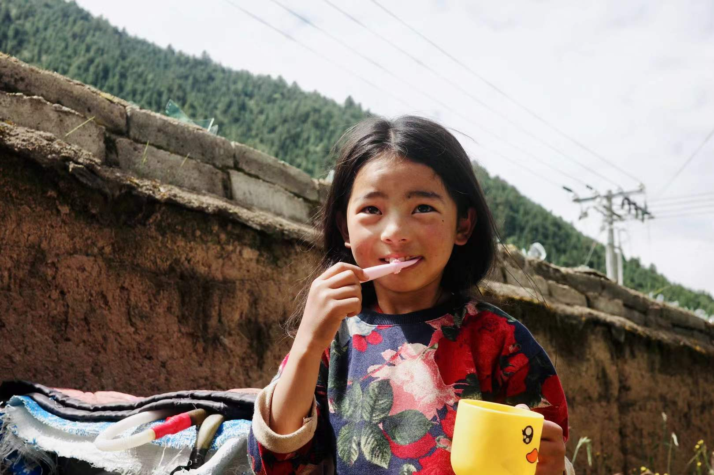

In the Eyes · 2023



这是一部于2023年拍摄的纪录片公益作品，记录川西藏区儿童的日常生活。影片以跟拍的方式展开，在语言与文化差异中，尝试以影像建立最基本的理解与连接，关注被忽视的成长环境与真实存在的生活状态。
This is a documentary public welfare film shot in 2023, focusing on the daily lives of Tibetan children in Western Sichuan. Through observational filming, the project explores communication across linguistic and cultural barriers, using the camera to build understanding and visibility for lives often left unseen.